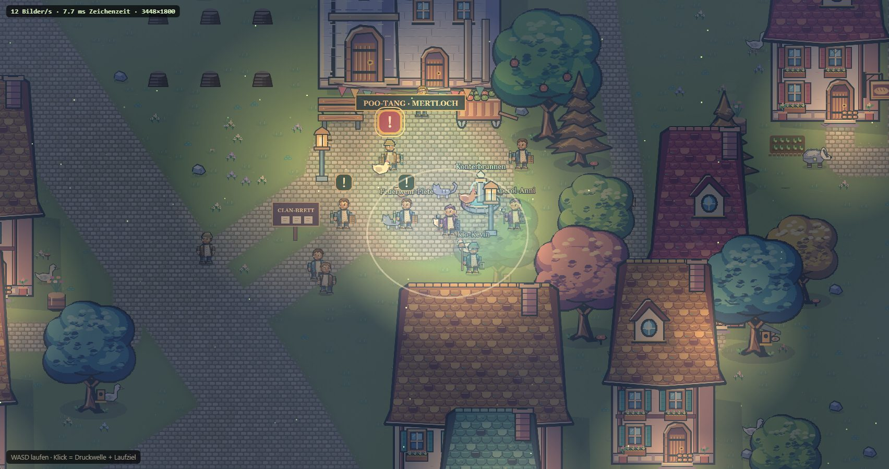

A · Canvas 2D ausbauen
Aufwand: läuft (E-39)Risiko: gering
- Nacht, Lichtkegel, Nebel, Regen, Funken als weitere 2D-Ebenen.
- Bloom und Farbstimmung gehen, kosten aber spürbar Zeichenzeit – zum Ausprobieren schaltbar.
- Bildverzerrung (Hitzeflimmern, Druckwelle) geht nicht.